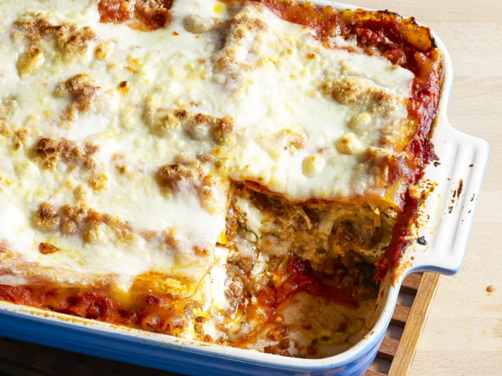

Lasagna

Descricption
Lasagna is a traditional Italian dish made by layering sheets of pasta with various fillings, typically including a rich meat sauce, ricotta or mozzarella cheese, and béchamel sauce.
The layers are repeated and the dish is baked until the top is golden and bubbling.
Lasagna is known for its hearty and comforting nature, making it a popular choice for family dinners and gatherings
Ingredients
If you want to stay true to the original recipe, though, these are the ingredients you'll need to add to your grocery list:
- Meat: This super meaty lasagna has sweet Italian sausage and lean ground beef
- Onion and garlic: An onion and two cloves of garlic are cooked with the meat to add tons of flavor
- Tomato products: You'll need a can of crushed tomatoes, two cans of tomato sauce, and two cans of tomato paste
- Sugar: Two tablespoons of white sugar add subtle sweetness and enhance the flavor of the sauce
- Spices and seasonings: This lasagna recipe is flavored with fresh parsley, dried basil leaves, salt, Italian seasoning, fennel seeds, and black pepper
- Lasagna noodles: Use store-bought or homemade lasagna noodles
- Cheese: Parmesan, mozzarella, and ricotta cheese make this lasagna extra decadent
- Egg: An egg helps bind the ricotta so it doesn't ooze out of the lasagna when you cut into it
Steps
Here's a very brief overview of what you can expect when you make homemade lasagna:
- Make the meat sauce.
- Cook the noodles.
- Make the ricotta mixture.
- Layer the lasagna according to the recipe instructions.
- Cover with foil and bake.
- Let the lasagna rest before serving.